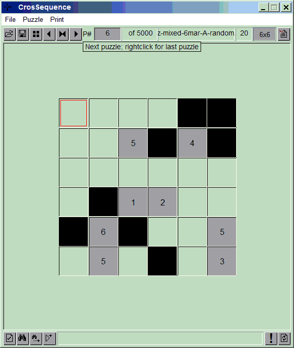
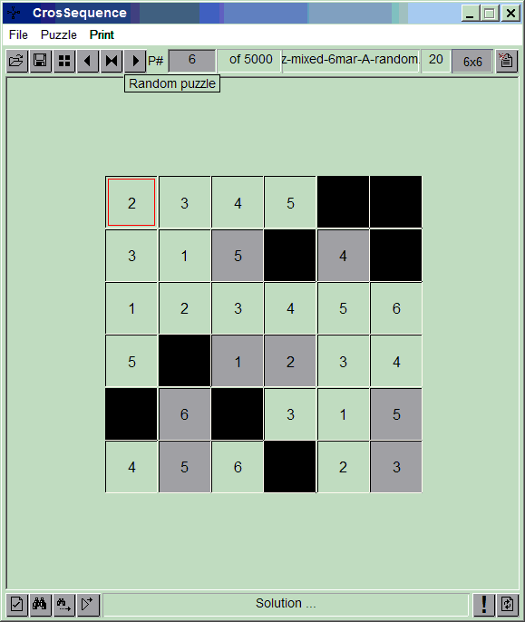

Welcome to CrosSequence Puzzle
Introduction
Puzzle Layout
Puzzle Example
Program Features
Solving a Puzzle Manually
Auto Solving a Puzzle
Printing
About CrosSequence Program
Introduction
Fill a grid such that cross cells at any location are in sequence. Cross cells are left and right, and, top and bottom of a cell. Sequence is a mathematical sequence like 1,2,3 or 4,6,8 or 1,5,9 etc. There are no duplicate numbers in any row or any column of the grid. Some cells are given and some may be blacked out (not part of a sequence). Puzzle size is 5x5 to 9x9. Each puzzle has a unique solution that can be reached by logic alone without any guesswork.
TOP
Puzzle

Solution

TOP
Puzzle Example
See the puzzle and its solution below:
Puzzle
+---+---+---+---+---+---+
| | | | | X | X |
+---+---+---+---+---+---+
| | | 5 | X | 4 | X |
+---+---+---+---+---+---+
| | | | | | |
+---+---+---+---+---+---+
| | X | 1 | 2 | | |
+---+---+---+---+---+---+
| X | 6 | X | | | 5 |
+---+---+---+---+---+---+
| | 5 | | X | | 3 |
+---+---+---+---+---+---+
X in cell indicates that a cell is not part of any sequence.
Solution
+---+---+---+---+---+---+
| 2 | 3 | 4 | 5 | X | X |
+---+---+---+---+---+---+
| 3 | 1 | 5 | X | 4 | X |
+---+---+---+---+---+---+
| 1 | 2 | 3 | 4 | 5 | 6 |
+---+---+---+---+---+---+
| 5 | X | 1 | 2 | 3 | 4 |
+---+---+---+---+---+---+
| X | 6 | X | 3 | 1 | 5 |
+---+---+---+---+---+---+
| 4 | 5 | 6 | X | 2 | 3 |
+---+---+---+---+---+---+
In this puzzle:
+---+---+---+
| | 4 | |
+---+---+---+
| 1 | 2 | 3 | Values in the grid are correct since:
+---+---+---+ 1,2,3 (horizontal) and 2,3,4 (vertical) are in sequence
| | 3 | |
+---+---+---+
And:
+---+---+---+
| | X | |
+---+---+---+
| 3 | 4 | 5 | Values in the grid are correct since:
+---+---+---+ 3,4,5 (horizontal) is in sequence and vertical sequence is not applicable because of a blocked cell X
| | 2 | |
+---+---+---+
TOP
Program Features
Main features of this program are:
- Create new puzzles, grid size 5x5 to 9x9
- Create and save puzzles
- Autosolve a puzzle with a log of solution steps
- Save solution log
- Print single or multiple puzzles
- Export puzzles in text format
- Copy a puzzle to Clipboard
- Set display colour schemes
- Use one of 20,000 ready made puzzles 2.17Mb
TOP
Solving a Puzzle Manually
Normally you would print this puzzle and solve on paper. Puzzle can also be solved on screen.
- Navigate through the grid using arrow keys
- Enter numbers using number keys
- Press Escape to clear a cell
- Rightclick on a cell to check validity of two sequences around a number. A green line will indicate a correct while red line will signify an incorrect sequence.
- Click verify command button to check if you have solved the puzzle
TOP
Auto Solving a Puzzle
Any puzzle created by this program can be solved by the computer. Three options are provided:
- Solve Direct : Puzzle is solved in one shot with solution displayed at the end
- Solve with a log : Puzzle is solved in one shot but a solution log is maintained giving logic behind the solution. Use Save Solution Log menu to save and print the log in order examine the solution steps at leisure.
- Solve with a log and pause at each solution step: Program will display logic behind a solution step and pause. Click on the step message window or press space bar to proceed to next step. Rightclick on the step message window to cancel pause.
- Each puzzle has a unique solution which can be reached by logic alone without any guesswork. However, the solution steps taken by a computer solution may not be optimum. Generally a good human solver will get a solution in less steps than the computer.
TOP
Printing
The current puzzle and its solution will be printed on an A4 sheet that can be folded in two halves to separate puzzle from its solution. You can also print multiple puzzles from an existing puzzle file.
TOP
About CrosSequence Program
This program is free to use and distribute but this program or game concept cannot be used for commercial purposes.
ihsan@ihsan.biz
TOP